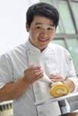
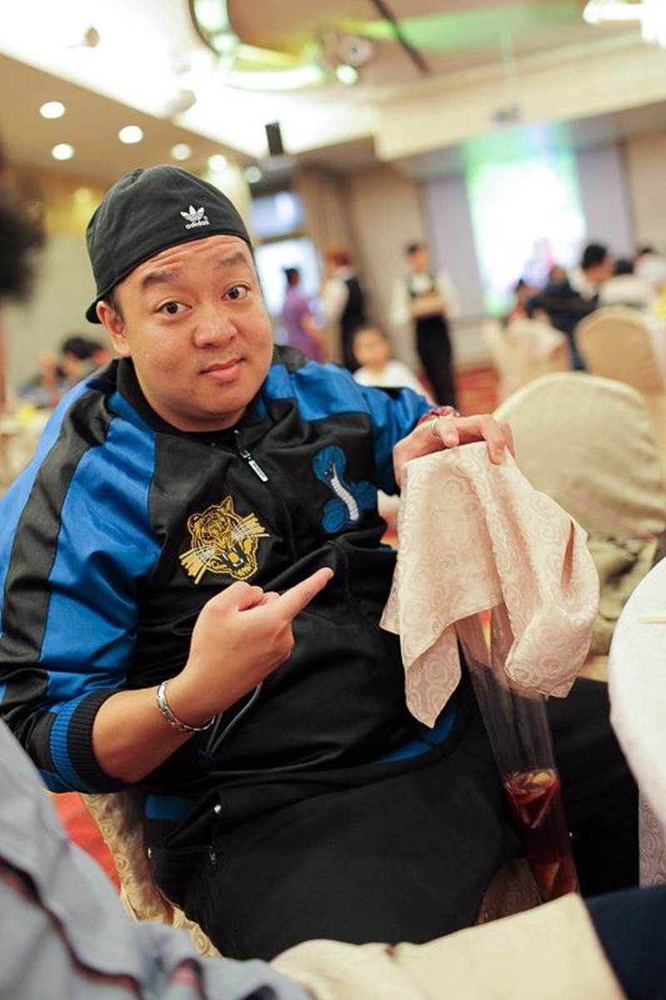

師資專長及課程調配
姓名 |
學經歷 |
任教科目 |
專業證照 |
江裕春 |
高雄餐旅學院台灣飲食文化產業研究所 |
• 餐服 |
• 中餐乙級 |
科師資專長及課程調配
姓名 |
學經歷 |
任敎科目 |
專業證照 |
潘宏碁 |
星帝嶺資深廚師 |
• 中餐烹飪 |
中餐乙級 |
姓名 |
學經歷 |
任敎科目 |
專業證照 |
|
杜洛豪 |
• Australia TAFE SA |
中餐烹調 |
• Australia commercial cookeryШ IV |
|
何國熙 |
• 台北市立松山工農食品烘焙科畢業 |
烘焙麵包 |
• 烘焙食品-麵包-職類丙級技 |
 |
林家鈞 |
• 老大食品 麵包師 |
烘焙麵包 |
• 中餐烹調 丙級 |
 |
姓名 |
學經歷 |
任敎科目 |
專業證照 |
趙金發 |
教育部專科學校工業類食品工程畢業 |
西餐烹調 |
中餐烹調乙級 |
鍾坤賜 |
國立淡水商工餐飲科畢業 |
進階中餐烹調 |
中餐乙丙級 |
姓名 |
學經歷 |
任敎科目 |
專業證照 |
杜佳穎 |
高雄餐旅大學 |
中式點心 |
烘焙食品丙級 |
羅翊凱 |
高雄餐旅大學 |
中餐製作 |
中餐烹調丙級 |